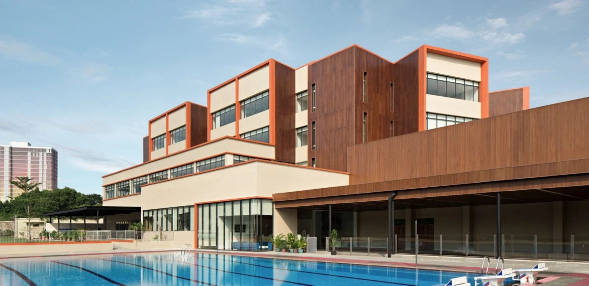

A tunnel linking two Australian Independent School buildings in Jakarta, passing 10 metres beneath Jalan Pejaten Barat, which stayed open throughout the works. We built 185 soldier piles Ø 800 mm to 19 metres as the tunnel’s earth retention system.
The main challenge was not the piles but the setting. The road could not be closed, the school kept running, and working space was tight in a dense urban environment — so vibration, noise and traffic had to be managed throughout. Varying ground conditions across a 10 metre excavation also required method adjustments on site.
The works ran from July 2019 to March 2021.

Not sure which foundation method suits your site? Just describe the conditions — our engineering team is glad to help, with no obligation.
WhatsApp: +62 811-902-590